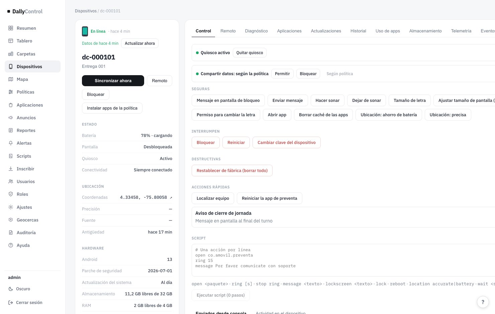
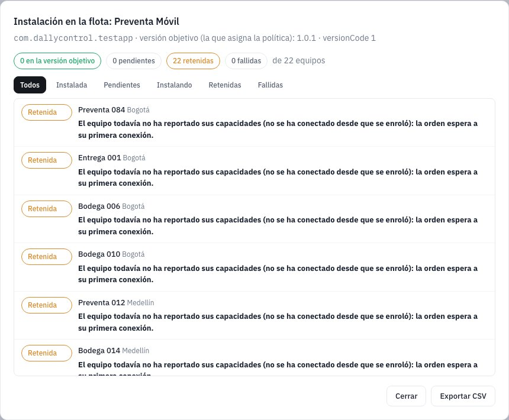

Contenido
Cada capítulo parte de lo que el administrador ve: un estado, un mensaje o algo que no ocurre. Las tablas dicen dónde mirar en {{PRODUCTO}} para confirmar la causa antes de cambiar nada.
1 · Dónde mirar primero
Abra Dispositivos, busque el equipo y entre a su ficha. Estas cuatro zonas cubren la mayoría de los casos.
| Pregunta | Dónde | Qué dice |
|---|---|---|
| ¿El equipo se comunica? | Encabezado de la ficha y botón Actualizar ahora | En línea, En reposo con su motivo, o Sin conexión, y hace cuánto reportó. |
| ¿Por qué se cortó? | Tarjeta Última falla de conexión | La falla de red, en qué red estaba y la causa del último corte. |
| ¿Recibió la política? | Tarjeta Estado de la política | Sincronizado, Aplicando…, Falló al aplicar, o Agente desactualizado, con el resultado por sección. |
| ¿Qué pasó con la orden? | Pestaña Control, historial de órdenes | Creada, Entregada y Completada, con hora, latencia y número de entregas. |

Figura 1. Ficha de un dispositivo. A la izquierda, estado, datos del equipo y tarjetas de política y conexión; a la derecha, las pestañas.
El agente guarda la última falla de red y la envía en su siguiente reporte. La tarjeta muestra estas filas:
| Fila | Qué contiene |
|---|---|
| Falla | El tipo de falla, con el texto de la tabla siguiente. |
| Cuándo | Fecha y número de intentos. |
| Red del equipo | Wi-Fi con el nombre de la red, Datos móviles, Sin red u otra. |
| Canal | Canal en vivo (WebSocket) o Reporte (HTTPS), y el servidor al que iba. |
| Emisor del certificado | Quién firmó el certificado que presentó la red, cuando la falla fue de certificado. |
| Último corte y Desde | La causa del último periodo sin comunicación, cuándo empezó y cuánto duró. |
| Servidor | La dirección en uso, si es la de respaldo, y el número de reconexiones. |
| Texto de «Falla» | Causa habitual | Qué revisar |
|---|---|---|
| No se pudo resolver el dominio (DNS) | Filtro de nombres o DNS interno | Permitir y resolver el dominio del servidor en esa red. |
| Certificado TLS rechazado (posible inspección TLS de la red) | La red inspecciona el tráfico cifrado | Mire Emisor del certificado: si es el firewall, excluya el dominio de la inspección. |
| Tiempo de espera agotado | Puerto 443 filtrado o Wi-Fi sin salida a internet | Regla de salida al 443; cobertura del Wi-Fi. |
| No se pudo abrir la conexión (puerto 443 bloqueado o conexión cortada) | Lo mismo | Lo mismo. Si ocurre solo en una red, el problema es esa red. |
| WebSocket rechazado (HTTP código) | Un proxy no permite el paso a WebSocket | Permitir WebSocket hacia el dominio. |
| El servidor o un intermediario respondió HTTP código | Código 407: proxy con autenticación. Códigos 5xx: falla del servicio | Salida directa para el dominio; con 5xx, avise al operador. |
| Error de red | Corte genérico | Mire Último corte y la red del equipo. |
| Texto de «Último corte» | Qué significa |
|---|---|
| Apagado o reinicio del equipo | Alguien lo apagó o reinició. Es normal. |
| El equipo se quedó sin energía (batería agotada o apagado forzado) | Se descargó o lo apagaron manteniendo el botón. |
| El equipo se quedó sin red | Sin cobertura, sin saldo de datos o Wi-Fi fuera de alcance. |
| El sistema cerró el agente | Android o el gestor de batería del fabricante cerró el agente. |
| El sistema mantuvo el agente dormido (ahorro de batería) | El ahorro de batería retrasó los reportes. |
| Había red, pero no se pudo llegar al servidor | La red filtra el servicio. Revise la fila Falla. |
| Sin causa identificada | El agente no pudo determinarla. |
Si la tarjeta dice «Sin fallas reportadas», el agente de ese equipo es anterior a esta función: actualícelo. Los mismos datos quedan en la pestaña Eventos como «Falla de conexión» y «Corte de conexión», con fecha y hora.
La pestaña Diagnóstico toma una foto del estado del teléfono. Pulse Diagnosticar ahora; el resultado tarda hasta 60 segundos y exige que el equipo esté en línea.
| Sección | Para qué sirve |
|---|---|
| Tabla de estado | Qué suena ahora, llamada en curso, modo de sonido, próxima alarma, pantalla, quiosco y si el agente tiene acceso a las notificaciones. |
| Sonidos recientes | Qué sonó, cuándo y la aplicación probable. Útil cuando «el teléfono suena solo». |
| Notificaciones en el teléfono | Las notificaciones presentes, con botones para abrirlas o descartarlas a distancia. |
| Cuándo se detuvo {{PRODUCTO}} | Las veces que Android cerró el agente y por qué. Disponible desde Android 11. |
| Apps que pasaron al frente (últimos 30 min) | Qué aplicaciones se abrieron. |
El botón Silenciar 10 min calla el equipo mientras se investiga. Si el diagnóstico responde «El teléfono no respondió en un minuto», el equipo está sin conexión o su agente es muy antiguo; la orden queda en cola.
2 · Enrolamiento
El panel Intentos de inscripción, al pie de Inscribir, registra la descarga del agente y cada inscripción aceptada o rechazada. La «Guía de enrolamiento» trae la lista completa de motivos.
| Síntoma | Causa probable | Cómo verificar | Solución |
|---|---|---|---|
| El lector de QR no abre con 6 toques | El equipo no está recién formateado, o es Android 6 | Versión de Android del equipo; si ya pasó la bienvenida | Restablecer de fábrica. Android 6: inscribir por cable. |
| «No se puede configurar el dispositivo» tras escanear | Wi-Fi sin internet o con portal; fecha de fábrica | El panel no muestra ni la descarga de ese equipo | Usar una red sin portal y escanear el QR desde la pantalla de la consola. |
| El panel muestra «Descargó el agente» y nada más | Android no instaló el agente o no lo dejó como propietario | Pista del panel a los 5 minutos | Confirmar equipo recién formateado y sin cuenta previa. En Android 15 y 16, inscribir por cable. |
| «El QR ya lo usó otro equipo» o «El código venció» | QR de un solo uso consumido o con más de 24 horas | Columna «Resultado» del panel | Nuevo código, o un código de carpeta. |
| «Código desconocido o revocado» | Código revocado o configuración Zero-Touch o KME vieja | Pestaña Códigos de carpeta | Crear un código nuevo y actualizar el portal. |
| «Fecha y hora del teléfono incorrectas» | El equipo arrancó con la fecha de fábrica | Fecha en el teléfono | Escanear el QR de la pantalla, que lleva la hora, o corregir la fecha. |
| «Administrado (Device Owner) pero sin código de inscripción» | El asistente no entregó el código al agente | El teléfono muestra la notificación «Este equipo aún no está inscrito» | En el teléfono: app DallyControl, Escanear el QR de la consola, o escribir un código de carpeta. Sin formatear. |
| El teléfono pide la cuenta de Google anterior | Protección contra restablecimiento | Pantalla «Verifica tu cuenta» | Entrar con esa cuenta, quitarla en Ajustes y restablecer de nuevo. |
| El equipo aparece dos veces | Se inscribió de nuevo y quedó la ficha antigua | Chip ⚠ Duplicados en Dispositivos | Eliminar la fila que ya no reporta. |
| Con cable: «No se pudo poner como Device Owner» | El equipo tiene una cuenta | Ajustes, Cuentas | Quitar todas las cuentas, usuarios secundarios y perfiles de trabajo. |
3 · Equipo «Sin conexión» o «En reposo»
| Estado | Cuándo aparece | Qué hacer |
|---|---|---|
| En línea | Canal en vivo abierto, o reportó en los últimos 20 minutos. | Nada. |
| En reposo | Más de 20 minutos sin reportar con causa conocida: «Equipo apagado» (hasta 72 horas), «Batería agotada» o «Pantalla apagada» (hasta 16 horas). | Esperar al siguiente turno. Las órdenes quedan en cola. |
| Sin conexión | Más de 20 minutos sin reportar y nada lo explica, o se superaron esos plazos. | Seguir la tabla siguiente. |
En la vista de lista, la columna Estado escribe «Apagado» para un equipo que no está en línea. El chip Sin conexión de los filtros cuenta también los equipos en reposo.
| Síntoma | Causa probable | Cómo verificar | Solución |
|---|---|---|---|
| Un equipo sin conexión, el resto bien | Apagado, sin datos, sin cobertura | Último corte en la tarjeta de conexión | Contactar al usuario. No es una falla del servicio. |
| Los equipos de una sede aparecen sin conexión mientras están en su Wi-Fi | La red de la sede filtra o inspecciona el tráfico | Falla y Emisor del certificado; coincide la red en varios equipos | Aplicar los requisitos de red y probar con scripts/prueba-red.sh. |
| El equipo reporta, pero las órdenes tardan minutos | WebSocket bloqueado; el canal en vivo no abre | Falla: «WebSocket rechazado» | Permitir WebSocket hacia el dominio. |
| Muchas reconexiones, sin fallas | El firewall corta conexiones inactivas | Fila Servidor: número de reconexiones | Tiempo de inactividad de 120 segundos o más para el dominio. |
| Se desconecta con la pantalla apagada | El ahorro de batería del fabricante duerme el agente | Último corte: «El sistema mantuvo el agente dormido»; fila Conectividad: «Ahorro de batería» | En la pestaña Remoto, Activar Siempre conectado. En el teléfono, quitar la restricción de batería del agente. |
| «El sistema cerró el agente» repetido | El gestor de batería del fabricante cierra aplicaciones | Pestaña Diagnóstico, «Cuándo se detuvo» | En el teléfono, permitir el inicio automático y la batería sin restricciones para el agente. |
| Muchos equipos dejan de reportar a la vez | Falla del servicio o del acceso | Página de estado del servicio | Avisar al operador. Ver «Operación, soporte y nivel de servicio». |
| «Datos de hace…» antiguos con el equipo en línea | El equipo aún no envía un reporte completo | Botón Actualizar ahora | Pulsarlo: el equipo reporta en segundos si tiene el canal en vivo. |
4 · Órdenes que no llegan
El historial de la pestaña Control muestra cada orden con tres pasos: Creada, Entregada y Completada. El estado dice dónde está.
| Estado | Qué significa | Qué hacer |
|---|---|---|
| Pendiente | El servidor la tiene; el equipo aún no la recibe. La consola agrega «En cola: se ejecutará cuando el equipo vuelva a conectarse.» | Esperar. Si ya no se necesita, Cancelar. |
| Entregado | El equipo la recibió y aún no confirma el resultado. | Esperar. El servidor la reentrega sola si no hay respuesta. |
| Ejecutado | El equipo confirmó. | Nada. |
| Fallido | El equipo intentó y no pudo. El detalle lo escribe el equipo. | Leer el detalle con «ver más». |
| No soportado | El agente de ese equipo no conoce esa orden, o la versión de Android no la admite. | Actualizar el agente. |
| Vencido | Pasó el plazo de esa orden sin entrega o sin respuesta. | Enviarla de nuevo con el equipo en línea. |
| Cancelado | Un usuario la canceló. | Nada. |
| Síntoma | Causa probable | Cómo verificar | Solución |
|---|---|---|---|
| Aviso «en cola — El equipo no tiene enlace ahora» | El equipo no tiene el canal en vivo abierto | Estado del equipo en el encabezado | La orden se ejecuta al reconectar. Revisar el capítulo 3 si ocurre siempre. |
| La orden se ejecuta minutos después | Sin canal en vivo, llega con el reporte periódico | Latencia entre Creada y Entregada | Permitir WebSocket; usar el modo Siempre conectado. |
| «entregada N veces» | El equipo la recibió y no respondió a tiempo | Línea bajo la orden | Ninguna si terminó en Ejecutado. El equipo no la ejecuta dos veces. |
| Reiniciar termina en Vencido | El equipo estuvo más de 24 horas sin conexión | Fechas de la orden | Reenviar con el equipo en línea. |
| Cambiar clave no surte efecto | El equipo ya tenía clave antes de inscribirse | Descripción de la acción | Desbloquearlo una vez con la clave actual; después el cambio remoto funciona. |
| No aparecen Bloquear, Reiniciar ni Restablecer de fábrica | Al usuario le falta el permiso de acciones que interrumpen | Roles, fila «Acciones que interrumpen» | Asignar un rol con ese permiso. |
| El borrado remoto no se ofrece para varios equipos | Protección: el borrado nunca se envía en masa | — | Enviarlo equipo por equipo desde su pestaña Control. |
| No se puede cancelar | La orden ya terminó, venció o se canceló | Estado de la orden | Nada: solo se cancelan órdenes en Pendiente o Entregado. |
| El aviso muestra un texto que empieza por «error.» | El servidor rechazó la petición y la consola muestra su código | Tabla de códigos al final de esta guía | Según el código. |
Cancelar una orden ya entregada evita que se reenvíe, pero el equipo pudo haberla ejecutado; la consola lo advierte. El reporte Latencia de comandos resume por tipo de orden cuánto tardan en entregarse y ejecutarse; el reporte Sin recibir comandos lista los equipos con órdenes antiguas en cola.
5 · Instalación de aplicaciones
En Aplicaciones, el botón Instalación de una aplicación abre Instalación en la flota. Cada equipo aparece como Instalada, Pendiente, Instalando, Retenida, Fallida o Sin orden. Los filtros de arriba aíslan cada grupo y Exportar CSV entrega la lista.

Figura 2. Ventana «Instalación en la flota» de una aplicación, con el estado y el motivo por equipo.
Reintenta a los 10 minutos, 30 minutos, 2 horas, 6 horas y 24 horas. Después de 5 intentos deja de reintentar y hay que pulsar Reintentar.
| Motivo que muestra la consola | Qué hacer |
|---|---|
| No hay espacio suficiente en el equipo. | Liberar almacenamiento: pestaña Almacenamiento, botón Analizar. |
| El archivo descargado llegó dañado (su SHA-256 no coincide). | Esperar: se descarga de nuevo. Si se repite en todos los equipos, subir otra vez la versión. |
| El equipo no pudo descargar el APK (sin conexión o conexión inestable). | Revisar la red del equipo. |
| Android no respondió a la instalación a tiempo. / El sistema del equipo canceló la instalación. | Esperar el reintento. |
| La orden venció sin que el equipo la recibiera o respondiera. | El equipo estuvo apagado o sin conexión. Pulsar Reintentar cuando vuelva. |
| Motivo que muestra la consola | Qué hacer |
|---|---|
| La firma del APK no coincide con la de la versión instalada en el equipo. | Subir el archivo firmado con el mismo certificado, o desinstalar la aplicación del equipo antes de instalar esta. |
| La app choca con otra ya instalada en el equipo. | Desinstalar la existente, o subir el archivo con la firma original. |
| El equipo ya tiene una versión más nueva. | Subir una versión con código mayor, o elegir en la política volver a la anterior aceptando que se borran los datos de la aplicación. |
| El equipo pidió confirmación del usuario: el agente no es Device Owner. | Inscribir de nuevo el equipo como propietario del dispositivo. |
| El sistema del equipo (fabricante o Play Protect) bloqueó la instalación desde el MDM. | Revisar la protección de Google Play en ese equipo; reportar el modelo a soporte. |
| La app no es compatible con este equipo. | Versión de Android o procesador no admitidos, o faltan partes del paquete. Subir el archivo adecuado. |
| El APK es inválido o está dañado. | Generarlo y subirlo de nuevo. |
| El equipo no pudo descargar el APK (HTTP 4xx): el archivo ya no está en el servidor. | Subir de nuevo la versión. |
| El agente del equipo no reconoce la orden de instalación. | Actualizar el agente. |
| Motivo que muestra la consola | Qué hacer |
|---|---|
| El equipo no es Device Owner: la orden queda retenida y no se instalará. | Inscribir de nuevo el equipo: por QR tras restablecerlo, o con un computador. |
| El equipo todavía no ha reportado sus capacidades. | Esperar su primera conexión. |
| En cola: se entrega en la próxima conexión del equipo. | Esperar. La orden de instalación espera hasta 30 días. |
| La política asigna la app a este equipo, pero aún no se le ha enviado la orden de esta versión. | Guardar la política, o pulsar Enviar ahora. |
| Síntoma | Causa probable | Solución |
|---|---|---|
| «No se pudo subir la parte… Vuelve a elegir el mismo archivo para continuar desde donde quedó.» | Se cortó la conexión durante la subida | Elegir de nuevo el mismo archivo: la subida continúa. La subida incompleta se conserva 24 horas. |
| «El archivo supera el máximo de 4 GB.» | Límite del producto | Reducir el archivo. |
| «Los .aab no se pueden instalar» | Es un paquete para la tienda, no instalable | Generar un APK universal o un paquete dividido y subir ese. |
| «⚠ La firma del APK cambió» | La versión nueva está firmada con otro certificado | Cancelar y subir el archivo con la firma original. Los equipos que ya tienen la aplicación rechazarían la nueva. |
| «Más antigua que la de la Biblioteca» | El código de versión es menor | Subir una versión con código mayor. |
| «Esa versión ya está en la Biblioteca» | El archivo es idéntico al ya alojado | Elegir esa versión en la política. |
| Chip «Sin APK» y la aplicación no se instala sola | Es una ficha de la tienda, sin archivo en el servidor | Botón Obtener APK, o subir el archivo en APK propio. |
6 · Quiosco
| Síntoma | Causa probable | Cómo verificar | Solución |
|---|---|---|---|
| El equipo no entra al quiosco | La política no se ha aplicado | Tarjeta Estado de la política | Sincronizar ahora. Si dice «Agente desactualizado», actualizar el agente. |
| «El teléfono aún no confirma» | El equipo está bloqueado o sin canal en vivo | Estado del equipo | Se aplica en su próxima conexión. |
| Muestra una cuadrícula en vez de una sola aplicación | Hay más de una aplicación visible, un grupo «En quiosco» o una función marcada | Política: Apps permitidas, grupos y Funciones del quiosco | Dejar solo la aplicación principal como visible en quiosco y sin funciones. |
| La aplicación principal no abre; aparece la cuadrícula | La aplicación fijada no está instalada | Pestaña Aplicaciones del equipo | Agregarla a Apps permitidas con acción Instalar. |
| Falta una aplicación en el quiosco | No está marcada «En quiosco», o está en «Ocultar del quiosco» | Fila de la aplicación en la política | Marcar la casilla y guardar. |
| «…se cerró varias veces seguidas, así que no se volvió a abrir sola.» | La aplicación falla al abrir; el agente evita un ciclo | Mensaje en el teléfono; evento en la ficha | Tocar «Abrir» en el teléfono; revisar la aplicación con su proveedor. |
| No se puede salir desde el teléfono | El gesto no se hizo completo, o falta la contraseña | Política: «Botón Salir del quiosco» y contraseña | 7 toques seguidos en la esquina superior derecha. Desde la consola, Quitar quiosco funciona siempre. |
| Cualquiera sale del quiosco | La política no tiene contraseña de salida | Política, grupo Seguridad | Definir la contraseña y guardar. |
| En Android 16 los botones de la barra no obedecen a la política | En esa versión el agente usa un quiosco propio, sin el bloqueo del sistema | Versión de Android del equipo | Es el comportamiento previsto en Android 16. |
| No se puede apagar el equipo | La política tiene clave para apagar | Política: «Antirrobo: clave para apagar» | Escribir la clave en el teléfono; el menú de apagado se abre 30 segundos. |
Llega con la integración del quiosco reforzado
La versión que se integra a continuación hace obligatoria la contraseña de salida, agrega una espera creciente tras intentos fallidos y muestra en la ficha el estado del refuerzo. Este capítulo se ampliará entonces.
7 · Ubicación y geocercas
| Síntoma | Causa probable | Cómo verificar | Solución |
|---|---|---|---|
| «Aún no ha reportado ubicación» | La política no rastrea, o el equipo no ha fijado posición | Política: Reporte de ubicación y Ubicación cada | Elegir GPS o Red y un intervalo; guardar. |
| «Sin posiciones en este rango» | El rango no tiene datos, o el equipo estuvo dormido | Pestaña Ubicación, rango de fechas | Ampliar las fechas; enviar Ubicación: precisa desde Control. |
| Posiciones marcadas «baja precisión» | El equipo ubica por red, bajo techo o sin satélites | Precisión «±N m» de cada posición | Usar reporte por GPS. Ajustar Precisión máxima aceptada si la operación lo tolera. |
| La geocerca no alerta aunque el equipo salió | Posiciones imprecisas, fuera del horario de la zona, o zona inactiva | Chips de la zona en la pestaña Ubicación: dentro, fuera o sin evaluar | Revisar Horario, Zona activa y a quién aplica. |
| La alerta llega tarde | Se exigen posiciones de confirmación y el intervalo es largo | Posiciones de confirmación y frecuencia de ubicación | Poner menos minutos en Frecuencia de ubicación de la zona. La alerta llega entre 1 y 2 intervalos después del cruce. |
| Alertas de un equipo parado junto al borde | Margen del borde pequeño | Margen del borde | Aumentarlo, o dibujar la zona con holgura. |
| Sin alerta para «Toda la flota» siendo usuario de carpetas | Solo un administrador completo asigna zonas a toda la flota | — | Asignar la zona a sus carpetas. |
| El mapa avisa que el rango tiene más posiciones de las que carga | Límite de la consulta | — | Acortar el rango o filtrar por carpeta. |
Las zonas se evalúan en el servidor con cada posición que llega. Al reconectar, el equipo sube las posiciones acumuladas y el servidor las evalúa en orden, con la hora real de cada cruce.
8 · Control remoto
| Lo que muestra la consola | Causa | Solución |
|---|---|---|
| «Este dispositivo aún no tiene el soporte remoto» | Falta el componente de pantalla remota | Instalar soporte remoto. Necesita Android 7 o superior. |
| Aviso «Solo ver» | El servicio de accesibilidad del soporte remoto está apagado en el teléfono | Abrir el ajuste en el teléfono y que la persona lo active. |
| «Esperando a que el dispositivo se conecte…» por minutos | Equipo bloqueado y en ahorro de batería | Activar Siempre conectado. |
| «El dispositivo no respondió en 6 minutos» | Sin conexión o dormido | Revisar el capítulo 3 y reintentar con el equipo en línea. |
| «El teléfono no tiene activado el servicio de entrada…» | Falta el permiso de control o la captura de pantalla | Pasar de nuevo el inscriptor de Windows por ese teléfono; no borra nada. |
| «…no arrancó a tiempo en el teléfono.» | El sistema cerró el componente en segundo plano | Reintentar con el teléfono desbloqueado. |
| «El sistema del teléfono (Xiaomi/HyperOS) cerró el soporte remoto en segundo plano.» | Gestor de batería del fabricante | En el teléfono: permitir el inicio automático y la batería sin restricciones para el soporte remoto. |
| «El teléfono no alcanzó el servidor de control remoto» | La red del equipo bloquea WebSocket | Revisar los requisitos de red. |
| Chip «Sin cifrar» | Agente anterior al túnel cifrado | Actualizar el agente. |
| «Visor no conectado» | Se pulsó una tecla antes de ver la pantalla | Esperar a que aparezca la pantalla. |
| «Sesión remota finalizada» | 15 minutos sin actividad | Iniciar otra sesión. |
| El teléfono pide permiso para compartir la pantalla | Primera sesión en ese equipo | Quien lo tenga toca «Iniciar ahora». |
Una aplicación que protege su pantalla, como las bancarias, se ve en negro. El control remoto no puede saltar la clave de desbloqueo del equipo.
Llega con la integración del soporte remoto con voz
La versión que se integra a continuación agrega captura desde el propio agente, llamada de voz, chat, portapapeles y archivos, con sus propios mensajes de error. Este capítulo se ampliará entonces.
9 · Correo y reportes
El correo saliente lo configura el operador del servidor, no la consola. La pestaña Notificaciones por correo de Geocercas dice en su primer renglón si está configurado y trae el botón Enviar prueba.
| Síntoma | Causa probable | Cómo verificar | Solución |
|---|---|---|---|
| «El servidor no tiene correo saliente (SMTP) configurado» | Faltan los datos de correo en el servidor | Aviso en Alertas, Geocercas y Envíos programados | Pedir al operador que los configure y reinicie el servidor. |
| «El servidor de correo rechazó el mensaje» | Usuario, clave, puerto o cifrado incorrectos, o remitente no autorizado | Enviar prueba | El operador revisa los datos de correo. |
| La prueba llega pero las alertas no | No hay destinatarios para esa carpeta o ese tipo de alerta | Tabla de destinatarios: columnas Carpeta, Alertas y Activa | Agregar destinatarios. Una regla sobre una carpeta cubre sus subcarpetas. |
| Llega un solo correo con varias alertas | Los correos se agrupan por intervalo | Intervalo de correos | Es lo previsto. Reducir el intervalo si se necesita. |
| No llegó una alerta antigua | No se envían alertas de más de 24 horas ni las ya revisadas | Página Alertas | Consultarla en la consola. |
| Los correos llegan a no deseado | El dominio remitente no está autorizado | Cabeceras del correo | El operador ajusta el remitente y los registros del dominio. |
| Envío programado: «Sin SMTP» o «Falló» | Correo sin configurar o rechazado | Columna Último envío | Corregir el correo y pulsar Enviar ahora. |
| El envío programado no salió a su hora | Está en pausa, o el servidor estuvo detenido | Chip «En pausa»; columna Próximo | Reanudar. Si el servidor estuvo detenido, lo envía una vez al volver. |
| El CSV se abre en una sola columna | Separador distinto al de la hoja de cálculo | — | Exportar con «Punto y coma», el habitual en español. |
| Celdas vacías en el inventario | El equipo no ha reportado ese dato o su agente es antiguo | Columna «Última muestra» | Actualizar ahora en Dispositivos; actualizar el agente. |
| «Sin resultados para estos filtros.» | Filtros demasiado estrechos | Fechas y umbrales del reporte | Ampliarlos y pulsar Actualizar. |
10 · Acceso a la consola
| Síntoma | Causa probable | Solución |
|---|---|---|
| «Usuario o contraseña incorrectos» con la clave correcta | Cuenta bloqueada por 5 intentos fallidos | Esperar 5 minutos; cada fallo adicional duplica la espera, hasta 30. |
| Olvidó la contraseña | — | Un administrador la cambia en Usuarios, Editar. El usuario define la suya al entrar. |
| «No se puede conectar con el servidor.» | El servicio no responde o no hay internet | Probar otra red; consultar la página de estado. |
| Falta una entrada del menú | El rol no tiene ese permiso | Roles, botón Qué puede hacer. |
| No ve equipos que existen | Están fuera de sus carpetas | Usuarios, columna Carpetas. |
| La consola pide iniciar sesión de nuevo | Sesión vencida por inactividad, o hubo una actualización del servicio | Iniciar sesión. |
| Aviso «La nueva consola … ya está disponible» | Se publicó una versión nueva | Recargar. |
| Código | Qué significa |
|---|---|
error.permission.denied | El rol del usuario no permite esa acción. |
error.agent.command.bulkForbidden | Esa orden no se puede enviar a varios equipos a la vez. |
error.agent.command.notCancellable | La orden ya terminó, venció o se canceló. |
error.agent.device.unknown | El equipo ya no existe o está fuera del alcance del usuario. |
error.agent.remote.unsupported | El equipo no tiene el soporte remoto o su agente no lo admite. |
error.agent.config.none | El equipo no tiene política con quiosco que reaplicar. |
error.group.name.taken | Ya hay una carpeta con ese nombre en el mismo nivel. |
error.group.parent.invalid | La carpeta superior elegida no es válida para esa carpeta. |
error.announcement.noDevices | El anuncio no tiene destinatarios. |
11 · Preguntas frecuentes
Siguen funcionando con la última política recibida, incluido el quiosco. Al volver el servicio se ponen al día solos. Las órdenes enviadas antes quedan en cola.
Al menos cada 5 minutos en modo Siempre conectado, que es el predeterminado. Con el canal en vivo abierto, una orden llega en segundos.
Sí. Queda en Pendiente y se ejecuta cuando el equipo se conecta. Bloquear y borrar no vencen; las demás tienen plazo de 1 hora a 30 días según el tipo.
El teléfono sigue inscrito. Para retirarlo de verdad, primero restablézcalo de fábrica desde su pestaña Control y después elimínelo.
Sí, si la aplicación está en la política y no forma un grupo de versiones. Con un grupo de versiones, cada política usa la versión que se le asignó hasta que se cambie.
Sí, eligiéndola en el selector de versión de la política. El equipo desinstala la versión nueva e instala la anterior: se borran los datos de esa aplicación en el equipo.
No. Para desinstalarla, déjela en la política con la acción Desinstalar y guarde, o use Equipos en la aplicación.
La fijada en el equipo, si la tiene; si no, la de su carpeta; si no, la de la carpeta superior más cercana que tenga una; y si no, la política global.
Solo los equipos de sus carpetas y subcarpetas, incluidas las que se creen después. Los permisos de su rol deciden qué puede hacer con ellos.
No; ningún sistema de administración puede. Sí se puede dejar el equipo inservible para quien lo haga, indicando en la política las cuentas que pueden reactivarlo (Android 11 o superior).
Sí. La pestaña Remoto incluye además el conmutador de quiosco para quitarlo durante el soporte.
En Auditoría, con fecha, usuario, dirección, acción y detalle del cambio. Cada política tiene además su Historial de cambios.
Estado del equipo, aplicaciones instaladas, uso por aplicación, ubicación si la política la pide y la pantalla solo durante una sesión de control remoto. No lee mensajes ni el contenido de las aplicaciones. El diagnóstico muestra las notificaciones presentes en el equipo y el análisis de almacenamiento, los nombres y tamaños de los archivos más pesados.
Salida al puerto 443 hacia el dominio del servicio, con WebSocket permitido y sin inspección TLS. El detalle y la prueba están en «Arquitectura y requisitos técnicos».